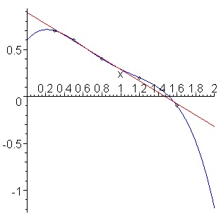

Passive Prediction Questions and External Validity#
In this chapter, we will discuss the concept of external validity as it pertains to answering Passive Prediction Questions. Where internal validity measures how well a model captures meaningful variation in the data we already have, external validity measures how well our model is likely to perform when faced with new data.
As we learned before, a model’s external validity is specific to the new context to which it is applied. A model will generally have very high external validity in a setting similar to the training context. In contrast, a model will generally have low external validity when applied in settings that differ from the training context geographically, temporally, or culturally. For example, a model trained to detect solar panels in satellite images in Arizona is likely to also perform well in the similarly hot arid climate of New Mexico, but performance would likely be lower in states that have different roof geometry as a result of winter snow like Michigan. That same model would also probably have extremely low external validity if used to detect solar panels in rural India or sub-Saharan Africa where housing structures and the types of panels commonly used are radically different than in the US.
Some of the factors that influence the external validity of Passive Prediction Questions are the same as those that shape the external validity of Exploratory Questions. Models trained on one population or during a specific time period may not generalize, whether used to answer Exploratory or Passive Prediction Questions. There are other concerns that are more specific to Passive Prediction Questions, however, as detailed in this chapter. As in our Exploratory Question readings, I will focus on more holistic considerations as I suspect you’ve already been exposed to more traditional statistical methods of model evaluation.
Extrapolation and Training Parameter Ranges#
Tools for evaluating internal validity help ensure that statistical and machine learning models will tend to fit the data on which they are trained relatively well. However, while most statistical models are capable of generating predicted values over a very broad range of input values, their reliability outside the range of values on which they were trained is often very limited. Asking a model to make predictions for inputs on which the model wasn’t trained is called extrapolating, and is a great way to get oneself into trouble.
To illustrate, consider the two models in the figure below (source)—one a linear fit, and one a higher-order polynomial. Both model the data similarly in the range for which data is available — and so will perform similarly when one uses the metrics described above to evaluate the model’s internal validity — but make very different predictions when asked to extrapolate values of x below 0 or above 2.

Strategies like regularization[1] are designed to constrain the “wonkiness” of models with the goal of making them less likely to go crazy outside the parameter range on which they were trained. Almost by definition, however, absent data in those extended ranges, there’s no way to know for certain whether the model will generalize.
What Constitutes Extrapolation?#
In the example above, “extrapolation” refers to predicting values below 0 and above 2. However, what constitutes an extrapolation depends in part on the complexity of the model. With a nice, interpretable linear model, it’s not hard to have confidence that the model will make a reasonable prediction for \(x=0.5\), even though that specific value wasn’t in the training data.
But when working with highly non-linear models — neural networks, random forests, etc. — that aren’t interpretable and aren’t constrained to smooth functional forms — the only place one can feel sure of the behavior of the model is at the exact data points tested. The same flexibility that allows these models to accommodate unusual non-linear relationships can also lead to bizarre behavior either between points in the training data or where the model has over-accommodated a couple of idiosyncratic training examples (such as odd cases or observations with data entry errors).
For example, a credit risk model may make perfectly reasonable predictions for:
a married 45-year-old woman of Hispanic descent who lives in Colorado, and
a married 47-year-old woman of Hispanic descent who lives in Colorado
but make a crazy prediction for:
a married 46-year-old woman of Hispanic descent who lives in Colorado, or
a married 45-year-old woman of Hispanic descent who lives in Montana.
Indeed, it’s precisely for this reason that for many high-stakes decisions, regulators are increasingly requiring the use of interpretable models that include guarantees (like monotonicity) — a topic we will return to in a couple of readings.
The more flexible the model, the more data points are required to constrain the model’s behavior (the so-called “curse of dimensionality”), and the more cautious you should become. There’s a reason that LLMs hallucinate despite being fed unfathomably large amounts of data.
Extrapolation with Non-Tabular Data#
Thinking about “extrapolation” when dealing with tabular is sometimes a little easier than with non-tabular data, like image or video data. Nevertheless, models that take images or video as input are just as sensitive to external validity issues when extrapolating to types of behavior or inputs not seen in their training data.
Here’s a terrific example: for several years, car companies have been adding pedestrian detection algorithms to their cars to augment their automated crash prevention systems. Basically, these systems are designed to detect pedestrians in front of the car and apply the brakes if they determine a collision is imminent, just as they do when they sense an impending collision with another car.
Recently, however, the Insurance Institute for Highway Safety (IIHS) realized a problem with these systems: many companies now sell clothes that have reflective materials to help improve pedestrian visibility at night (they’re especially popular with runners and dog walkers). But it turns out that car companies didn’t train their models using pedestrians wearing reflective strips. As a result, these cars are actually more likely to hit pedestrian wearing reflective materials because their vision models fail to recognize what they see as pedestrians, as explained here.
Oops!
Train-Test-Splits and External Validity#
A common misconception among young data scientists is that the train-test-split workflow used in machine learning inoculates against external validity concerns. After all, the idea of split-train-test is that models are trained on one set of observations and evaluated against an entirely different set of observations.
While train-test-split can help reduce external validity concerns by guarding against overfitting, a fundamental limitation of the workflow is that training and test observations both come from the same context. Indeed, because test and training datasets are created by randomly splitting the observations from a single dataset, they should always have the same properties (at least in expectation) — a guarantee one certainly won’t get when moving from the data used to build a model to a real-world deployment.